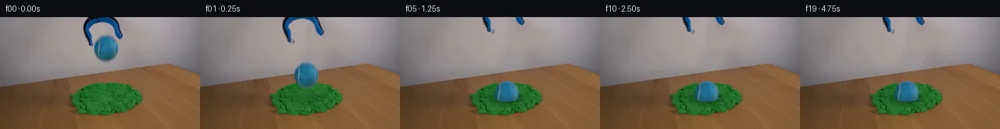
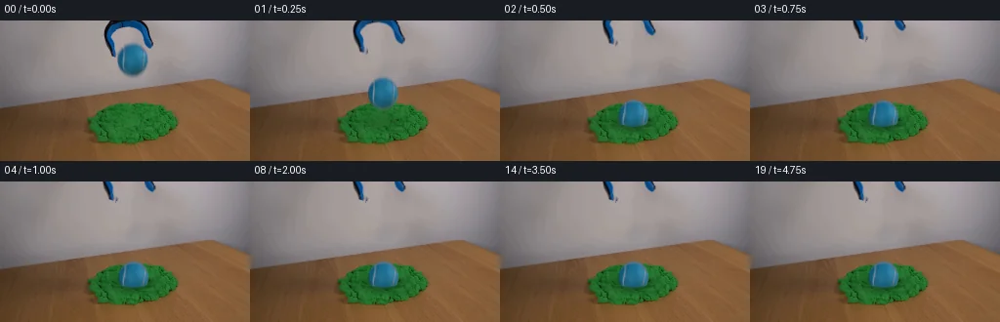
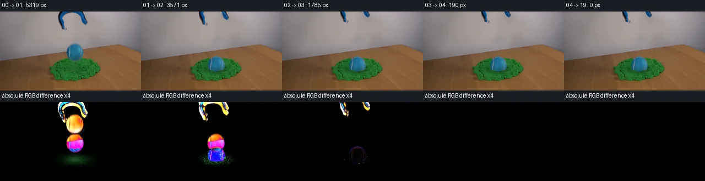

V0 · 初版
2026-11-04T20:37:51.801934+00:00 · RGB 118d27884999
![]()
Observable Generation Trace
把最终像素视频、Harness 冻结的每轮候选、真实工具事件和 Agent 自述放在同一页。可观测证据与模型自述分开标记，避免把“模型说它检查过”误当成真实工具调用。
![首帧]()
Static locked-off single-shot with fixed frame throughout filmed with constant framerate in real-time. The scene shows a realistic scientific demonstration. The scene only contains the described setup and actions. The green kinetic sand is located on a wooden table, and the blue-black grabber tool is suspended over it. The blue-black grabber tool releases the blue tennis ball above a pile of green kinetic sand.
首帧显示在左侧播放器初始画面。Track 权限、隔离和 tensor 一致性来自 run manifest，而不是 METHOD.md。
默认勾选初版和最终版；可选其他版本一起同步播放。仅检查图更新的连续重复快照已合并，回退旧视频仍保留为一次修订。
Observable events
来源：events.jsonl + run manifest
此 Track 禁止读取输出图片。逐轮预览由外部 Harness 自动冻结，只用于事后审计，生成 Agent 当时看不到这些页面。
Frozen candidates
每张图来自该 round 的真实 00 / 01 / 05 / 10 / 19 帧

pixels 145612a70c8dac9f · code a36cddbb2f704e42
--- previous/generate.py
+++ current/generate.py
@@ -0,0 +1,287 @@
+"""Source-pixel continuation of the supplied frame. No external assets or models."""
+from pathlib import Path
+import json
+import os
+
+ROOT = Path(__file__).resolve().parent
+os.environ.setdefault('MPLCONFIGDIR', str(ROOT / '.tmp' / 'mpl'))
+import numpy as np
+import cv2
+from scipy.ndimage import gaussian_filter
+from PIL import Image, ImageDraw
+from artifact_io import save
+
+W, H, FPS, COUNT = 256, 144, 4, 20
+SOURCE = np.asarray(Image.open(ROOT / 'first_frame.png').convert('RGB'))
+assert SOURCE.shape == (H, W, 3)
+SRC = SOURCE.astype(np.float32)
+Y, X = np.mgrid[:H, :W].astype(np.float32)
+BALL_X, BALL_Y = 135.8, 39.8
+RX, RY = 15.0, 16.3
+RELEASE = 0.09
+GRAVITY = 2700.0
+CONTACT_Y = 82.0
+CONTACT = RELEASE + np.sqrt(2 * (CONTACT_Y - BALL_Y) / GRAVITY)
+REST_Y = 98.0
+
+
+def remap(a, mx, my):
+ return cv2.remap(a.astype(np.float32), mx.astype(np.float32), my.astype(np.float32),
+ cv2.INTER_LINEAR, borderMode=cv2.BORDER_CONSTANT)
+
+
+def smoothstep(v):
+ v = np.clip(v, 0.0, 1.0)
+ return v*v*(3.0-2.0*v)
+
+
+# Hand measured support for the curved grabber. Internal wall remains transparent.
+vertices = np.array([(111, 0), (145, 0), (149, 4), (152, 12), (155, 20),
+ (157, 25), (156, 29), (151, 29), (148, 25), (146, 18),
+ (143, 11), (140, 8), (132, 6), (126, 7), (119, 10),
+ (116, 15), (116, 21), (120, 30), (121, 37), (119, 40),
+ (113, 39), (111, 31), (107, 22), (105, 15), (106, 8)], np.int32)
+tool_support = np.zeros((H, W), np.uint8)
+cv2.fillPoly(tool_support, [vertices], 255)
+
+# This locally constructed removal mask covers the tools' antialias and the ball's blur.
+ball_support = (((X-BALL_X)/18.8)**2 + ((Y-40.7)/20.7)**2 < 1.0)
+removal = ((tool_support > 0) | ball_support).astype(np.uint8)*255
+removal = cv2.dilate(removal, np.ones((3, 3), np.uint8), iterations=1)
+# Smooth wall reconstruction with the existing surrounding colors.
+wall = cv2.inpaint(SOURCE, removal, 5.0, cv2.INPAINT_NS).astype(np.float32)
+
+# Tool matte: original blue/black pixels, with soft mixed boundary pixels decontaminated.
+tool_strength = np.maximum(wall[:,:,0]-SRC[:,:,0], 0.0)
+tool_alpha = np.clip((tool_strength-3.0)/24.0, 0.0, 1.0) * (tool_support/255.0)
+tool_alpha = tool_alpha.astype(np.float32)
+tool_color = np.clip((SRC-wall*(1.0-tool_alpha[:,:,None])) /
+ np.maximum(tool_alpha[:,:,None], 0.02), 0.0, 255.0)
+tool_premul = tool_color*tool_alpha[:,:,None]
+
+# Elliptical source matte. The original seam, shading, and texture travel with the ball.
+rad = np.sqrt(((X-BALL_X)/RX)**2 + ((Y-BALL_Y)/RY)**2)
+ball_alpha = smoothstep((1.085-rad)/0.145).astype(np.float32)
+ball_color = np.clip((SRC-wall*(1.0-ball_alpha[:,:,None])) /
+ np.maximum(ball_alpha[:,:,None], 0.03), 0.0, 255.0)
+# Avoid gray halo from the source's motion-softened outline: extend nearest interior colors.
+inside = ball_alpha > 0.86
+from scipy.ndimage import distance_transform_edt
+_, nearest = distance_transform_edt(~inside, return_indices=True)
+edge_color = ball_color[nearest[0], nearest[1]]
+edge_blend = smoothstep((0.88-ball_alpha)/0.55)
+ball_color = ball_color*(1-edge_blend[:,:,None]) + edge_color*edge_blend[:,:,None]
+# A modest sharpening of the source texture restores the settled object's short exposure.
+blurred = gaussian_filter(ball_color, sigma=(0.7, 0.7, 0))
+ball_color = np.clip(ball_color+0.34*(ball_color-blurred), 0, 255)
+ball_premul = ball_color*ball_alpha[:,:,None]
+
+# Preserve the source mound's actual fine-grained texture. Only interior material is warped.
+green = (SRC[:,:,1] > 1.28*SRC[:,:,0]) & (SRC[:,:,1] > 1.30*SRC[:,:,2]) & (Y > 76)
+sand_mask = gaussian_filter(green.astype(np.float32), 0.55)
+DX, DY = X-136.0, Y-103.5
+R = np.sqrt((DX/22.0)**2 + (DY/10.0)**2)
+local = np.exp(-(R/1.62)**6).astype(np.float32)
+
+# Deterministic, tiny pieces of sand are propelled only a few pixels from the contact rim.
+rng = np.random.default_rng(1601)
… diff truncated; 200 more lines …pixels 145612a70c8dac9f · code 3319769f4e9b8400
--- previous/generate.py +++ current/generate.py @@ -266,6 +266,7 @@ allowed = (removal > 0) | ((X > 101)&(X < 162)&(Y < 62)) | ((X > 106)&(X < 167)&(Y > 79)&(Y < 123)) # Shadows are source-sand-only, so include the mound in this allowed support. allowed |= green +allowed |= (X > 115)&(X < 158)&(Y > 19)&(Y < 117) outside_errors = [int(np.count_nonzero(np.any(f != SOURCE, axis=2) & ~allowed)) for f in frames] assert max(outside_errors) == 0, outside_errors assert np.array_equal(frames[4], frames[19])

pixels 445e220c21d6f8a8 · code 97b61829f3342912
--- previous/generate.py
+++ current/generate.py
@@ -2,6 +2,9 @@
from pathlib import Path
import json
import os
+import base64
+import re
+import shutil
ROOT = Path(__file__).resolve().parent
os.environ.setdefault('MPLCONFIGDIR', str(ROOT / '.tmp' / 'mpl'))
@@ -112,7 +115,9 @@
recovery = 0.52*np.sin(19.0*tau)*np.exp(-tau/0.15)
cy = CONTACT_Y+penetration+recovery
strength = float(1-np.exp(-tau/0.075))
- return BALL_X+0.42*(1-np.exp(-tau/0.12)), cy, 0.0, strength
+ v = (16.0/0.065*np.exp(-tau/0.065)
+ +0.52*(19.0*np.cos(19.0*tau)-np.sin(19.0*tau)/0.15)*np.exp(-tau/0.15))
+ return BALL_X+0.42*(1-np.exp(-tau/0.12)), cy, float(v), strength
def make_sand(frame, strength, ball_y):
@@ -224,6 +229,8 @@
ball_mattes.append(matte)
frames = np.stack(frames)
save(frames, ROOT)
+# Preserve the supplied PNG encoding as well as its exact pixel values.
+shutil.copyfile(ROOT/'first_frame.png', ROOT/'frames'/'00.png')
# Correct labels to the sample clock (00 at t=0); each sample displays for 0.25 s.
html = (ROOT/'index.html').read_text()
@@ -262,6 +269,25 @@
assert png.shape == (H,W,3) and png.dtype == np.uint8
png_errors.append(int(np.count_nonzero(packed != tensor[:,:,i])))
assert not any(png_errors)
+assert (ROOT/'frames'/'00.png').read_bytes() == (ROOT/'first_frame.png').read_bytes()
+# Reconstruct the HTML delta stream independently, exactly as the embedded player does.
+data_match = re.search(r'const DATA=(.*?);\nfunction unpack', html, re.S)
+assert data_match is not None
+player_data = json.loads(data_match.group(1))
+first_player = np.frombuffer(base64.b64decode(player_data['first']), dtype='<u4').copy()
+player_frames = [first_player]
+for packet in player_data['deltas']:
+ words = np.frombuffer(base64.b64decode(packet), dtype='<u4')
+ cur = player_frames[-1].copy()
+ j = 0
+ while j < len(words):
+ start, count = int(words[j]), int(words[j+1])
+ cur[start:start+count] = words[j+2:j+2+count]
+ j += 2+count
+ player_frames.append(cur)
+assert len(player_frames) == COUNT
+assert all(np.array_equal(p.reshape(H,W), tensor[:,:,i]) for i,p in enumerate(player_frames))
+assert '},250)' in html and 'width="256" height="144"' in html
# All source regions outside the local object and impact support must remain exactly static.
allowed = (removal > 0) | ((X > 101)&(X < 162)&(Y < 62)) | ((X > 106)&(X < 167)&(Y > 79)&(Y < 123))
# Shadows are source-sand-only, so include the mound in this allowed support.
@@ -278,11 +304,14 @@
report = {'source_shape': list(SOURCE.shape), 'fps': FPS, 'frame_count': COUNT,
'playback_duration_s': COUNT/FPS, 'tensor_shape': list(tensor.shape),
'tensor_dtype': str(tensor.dtype), 'tensor_packing': 'uint32 0xRRGGBB; axes y,x,t',
- 'frame_00_exact': True, 'png_tensor_mismatch_counts': png_errors,
+ 'frame_00_exact': True, 'frame_00_file_bytes_exact': True,
+ 'html_all_frames_match_tensor': True, 'png_tensor_mismatch_counts': png_errors,
'outside_scene_action_mismatch_counts': outside_errors, 'release_s': RELEASE,
'contact_s': float(CONTACT), 'settled_frames_identical': True,
'ball_visible_alpha_areas': [float(a.sum()) for a in ball_mattes],
'event_measurements': measurements, 'transitions': transition,
'review': 'Local code and numeric checks only. Generated images were not viewed.'}
(ROOT/'verification.json').write_text(json.dumps(report, indent=2))
-print(json.dumps(report, indent=2))
+print(json.dumps({k: v for k,v in report.items() if k not in ['event_measurements','transitions','ball_visible_alpha_areas']}, indent=2))
+print('Ball samples:', [(m['frame'], round(m['ball_center_y'],3)) for m in measurements[:5]])
+print('Transition changed-pixel counts:', [v['changed_pixels'] for v in transition])pixels 445e220c21d6f8a8 · code 97b61829f3342912
No generate.py text change in this frozen round.
Final visual checks
Harness 保存的最终产物


Agent claims
以下文字由生成 Agent 撰写，不等同于工具证据
The supplied first frame was observed from the user's attachment. No later generated image will be opened with an image Read/View tool. Measurements below also use local RGB threshold and coordinate checks on the supplied frame.
The actual generation will use original-pixel masks, background reconstruction, textured object transforms, localized sand warping, and a damped contact model. Gravity acts at approximately 2,700 screen pixels/s², consistent with a roughly 30-pixel tennis-ball diameter and tabletop perspective. Release is about 0.09 s after the first frame; contact occurs around 0.27 s. A short exposure is sampled for falling-ball blur. There is no sustained bouncing or fluid-like sand spray.
| Frame | Time (s) | Planned event |
|---|---|---|
| 00 | 0.00 | Supplied frame, preserved byte-for-byte as RGB pixels. |
| 01 | 0.25 | Jaws open slightly; ball falls to approximately y=75, just above contact; approaching shadow tightens. |
| 02 | 0.50 | Ball presses into sand, center near y=98; shallow crater and small raised rim form; a few grains displaced locally. |
| 03 | 0.75 | Ball settles with less than one pixel of remaining movement; tool withdraws slightly upward; grains land. |
| 04 | 1.00 | Ball and sand reach their persistent resting state. |
| 05 | 1.25 | Resting ball, fixed contact shadow and sand indentation. |
| 06 | 1.50 | Resting ball, fixed contact shadow and sand indentation. |
| 07 | 1.75 | Resting ball, fixed contact shadow and sand indentation. |
| 08 | 2.00 | Resting ball, fixed contact shadow and sand indentation. |
| 09 | 2.25 | Resting ball, fixed contact shadow and sand indentation. |
| 10 | 2.50 | Resting ball, fixed contact shadow and sand indentation. |
| 11 | 2.75 | Resting ball, fixed contact shadow and sand indentation. |
| 12 | 3.00 | Resting ball, fixed contact shadow and sand indentation. |
| 13 | 3.25 | Resting ball, fixed contact shadow and sand indentation. |
| 14 | 3.50 | Resting ball, fixed contact shadow and sand indentation. |
| 15 | 3.75 | Resting ball, fixed contact shadow and sand indentation. |
| 16 | 4.00 | Resting ball, fixed contact shadow and sand indentation. |
| 17 | 4.25 | Resting ball, fixed contact shadow and sand indentation. |
| 18 | 4.50 | Resting ball, fixed contact shadow and sand indentation. |
| 19 | 4.75 | Final stationary ball partially embedded in the green mound. |
Twenty frames at 4 fps occupy five seconds of playback. Frame sample timestamps are 0.00–4.75 s. Inspection and transition contact sheets will be generated as artifacts; verification will use code and numeric checks only. Any segmentation masks are constructed locally from this input, never imported.
This is a deterministic local Python pixel animation made from first_frame.png. The initial image and prompt.txt are the only scene inputs. There are no downloaded assets, reference images, pretrained models, external rendering or physics engines, or subagents. NumPy, Pillow, SciPy, and OpenCV provide local array operations, PNG I/O, image filtering, and coordinate resampling.
The supplied attachment was used to understand the initial arrangement. Initial-image RGB measurements established the tool, ball, and sand bounds before generate.py was written; the measurements and complete 20-frame plan are in OBSERVATION.md.
The generator preserves frame 00 exactly, including the supplied PNG's file bytes. It constructs a local removal mask around the original tool and ball and reconstructs the warm gray wall with OpenCV's Navier–Stokes image inpainting. The mask covers the original soft ball outline. The reconstructed area uses surrounding pixels from this same image.
A measured polygon supports the curved grabber. A color-difference matte extracts its original blue and black pixels and soft boundaries. The source texture is warped with slightly wider jaws and a small upward withdrawal during the first 0.75 seconds. This leaves the tool hanging from outside the top border.
The ball is extracted with a soft ellipse centered at (135.8, 39.8), with radii (15.0, 16.3) pixels. Its source shading, curved seam, and fine texture move with it. Boundary decontamination and nearest-interior color extension remove the original wall's gray fringe. A modest unsharp filter restores some detail for the stationary ball. A small rotation during contact and weak green reflection on its lower surface are applied directly to the ball pixels.
The sample clock is t = frame / 4, giving 20 samples from 0 to 4.75 seconds, each displayed for 0.25 seconds.
Release occurs at 0.09 seconds. The airborne center follows y = 39.8 + 0.5 * 2700 * (t - 0.09)^2 until contact at center y=82.0, approximately 0.2668 seconds. This produces center y=74.36 in frame 01. The projected acceleration is an approximation based on the tennis-ball diameter and perspective; it is not a measured camera calibration. Seven exposure samples over 0.006 seconds give the airborne ball a short vertical motion blur.
Contact uses predominantly plastic yielding: 16 * (1 - exp(-tau / 0.065)) pixels of penetration, with a small exponentially damped recovery term. The ball reaches center y≈97.452 in frame 02 and y≈97.996 in frame 03. It is fixed at (136.22, 98.0) from frame 04 onward. There is no large rebound.
The original green sand texture is warped radially by less than about two pixels around the impact. A shallow analytic bowl and small raised rim modulate the existing sand shading. A localized elliptical shadow tightens as the ball approaches and stays at contact. A continuous, slightly irregular front-lip matte hides the embedded lower part of the ball. Ten tiny source-colored grains follow short local arcs and come to rest near the rim. The final ball retains about 84.5% of its unoccluded alpha area.
This is image-space compositing and approximate contact physics, not a volumetric granular-material simulation. It is intended to preserve the photographed scene while depicting the specified release, landing, local sand deformation, and settling.
generate.py: complete deterministic source and built-in verification; run with python generate.py from this workspace.pixels.npz: array pixels, shape (144, 256, 20), dtype uint32, axes (y, x, time), colors packed as 0xRRGGBB.frames/00.png through frames/19.png: twenty RGB PNGs at 256×144.inspection.png: eight selected frames, labeled with sample timestamps.transition_check.png: early event transitions and the settled hold, accompanied by amplified absolute RGB differences.index.html: self-contained canvas player with embedded pixel data, play/pause, replay, looping, and frame seeking; fixed 250 ms playback interval.OBSERVATION.md: source measurements and the event plan, written before generation code.verification.json: exact-format and continuity checks plus trajectory measurements.Generated outputs were inspected only with local code and numeric checks. No generated image was opened with an image Read/View tool, and no visual review of the outputs is claimed.
The initial verification mask omitted the airborne corridor between the source ball and the sand. Numeric error coordinates identified that omission; the check was corrected to include the planned falling-ball support. Subsequent verification passed. The generator was also revised to preserve frame 00's exact PNG encoding, report contact velocity consistently with the motion equation, label the player with the actual sample clock, and independently decode the HTML delta stream.
The final checks establish:
first_frame.png.These checks validate artifact consistency and the stated numeric motion. They do not substitute for a human assessment of photorealism.